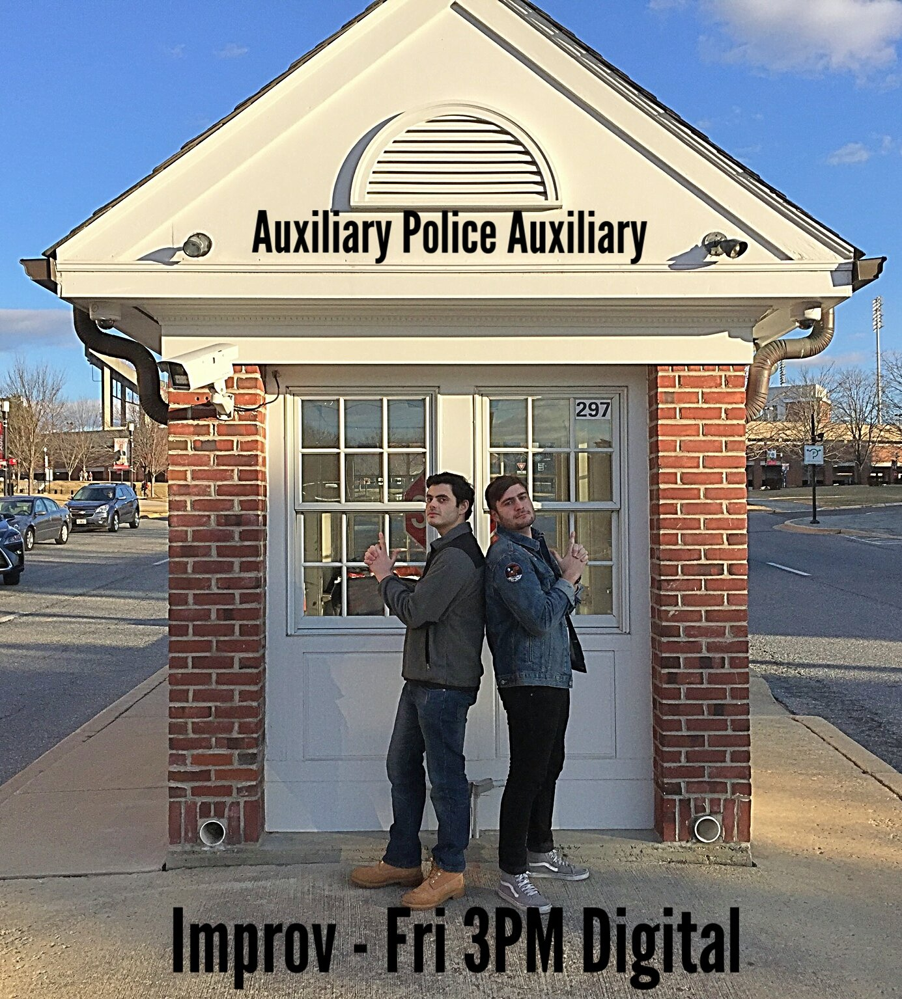
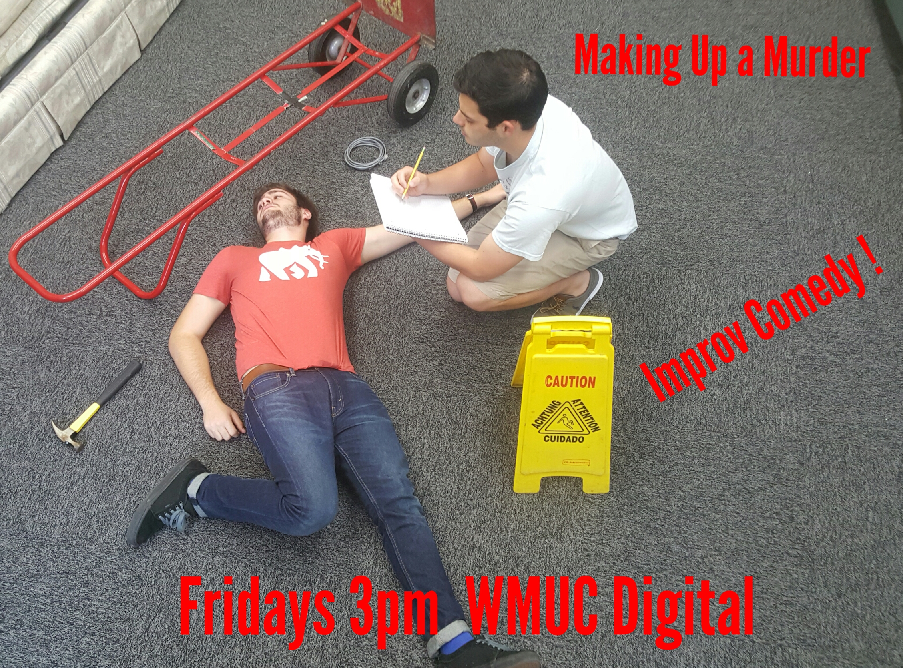
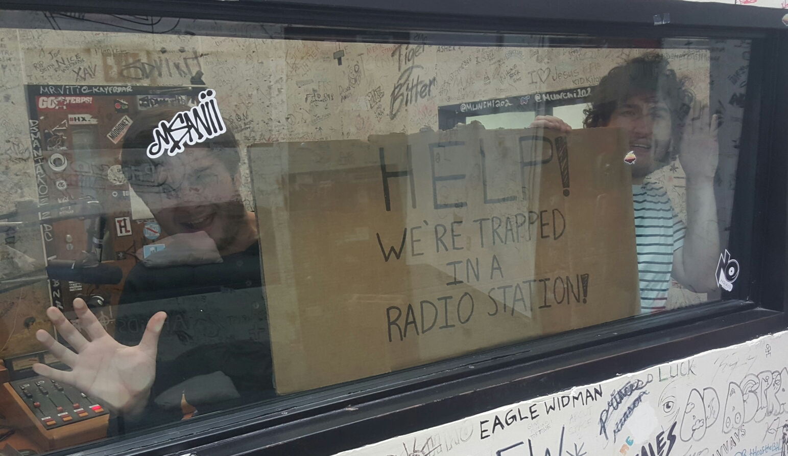

Catch live episodes and view the schedule at wmuc.umd.edu
Auxiliary Police Auxiliary
In Spring 2018 Anthony and I hosted another live improv comedy show. Every Friday at 3pm on WMUC Digital a new hour long form improv set! This time we take crime at the University of Maryland into our own hands. We go where the UMPD and the Police Auxiliary can't.
 Making the campus safer by solving one made up crime at a time!Making Up A Murder
In Fall 2017, my cohost Anthony and I hosted an improv comedy radio show on WMUC Digital. The show follows two investigative journalists investigating cold case murders. It is a spoof of programs like Making a Murder and the Serial podcasts. Everything is made up on the spot with no preparation!
Anthony and Jake investigate the biggest murders that never happened. Take a journey as we dive into made up cold case crimes. Improved recordings, documents, accents, live interviews, crooked police, government corruption, underground organizations? We don't even know what will happen. Listen live at wmuc.umd.edu Digital, Fridays at 3pm.
Listen to episodes of the show on my mixcloud  These are all made up!
Help! We're Trapped in a Radio Station!
In Spring 2017, my friend George and I hosted an improv comedy radio show on WMUC Digital. The show followed the lives and trials of two guys trapped in a radio station for a semester. Follow us on a variety of improv games and off the head discussion.
What's going to happen on the show? We don't even know. That's because we make it all up off the top of our heads. Each episode has its own theme, which we explore by talking things out and playing some games. We might have a mystery expert show up, or we might talk about awkward things that happen in our lives. We will cry, we will laugh, and we will ask for help getting out of the radio station, because we are 100% seriously trapped in here. PLEASE let us out!!! Each episode will also contain a few songs we hold close to our hearts. But seriously, someone needs to let us out. Listen live at wmuc.umd.edu Digital, Fridays at 9am.
Listen to the show on mixcloud

Please let us out of here!